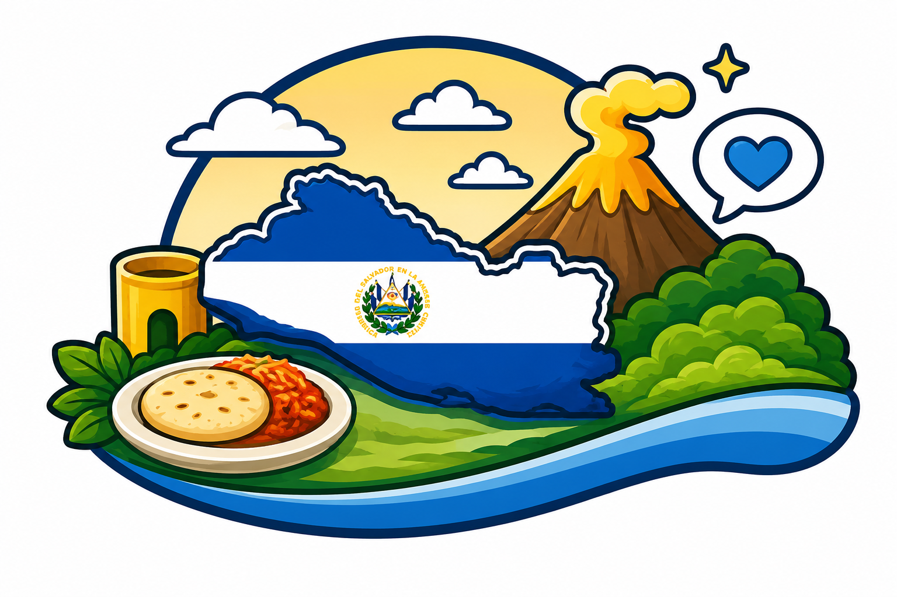
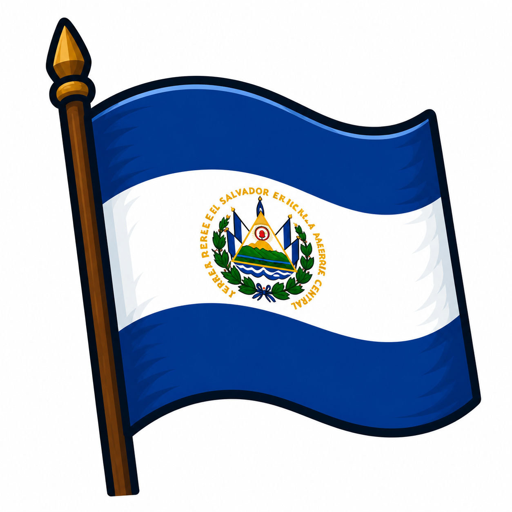
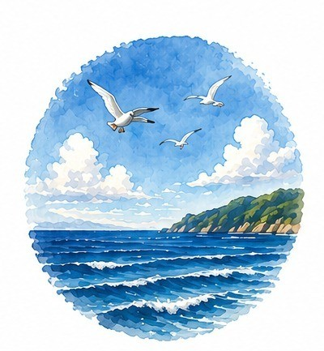
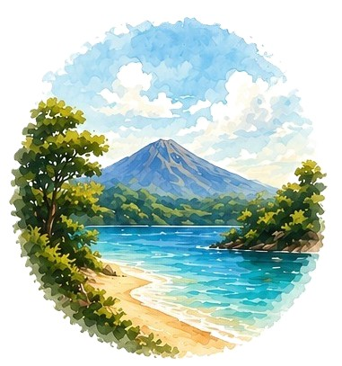
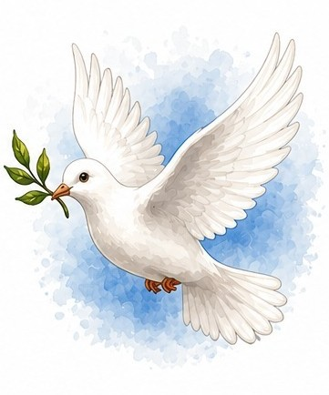
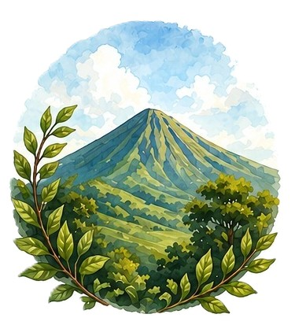
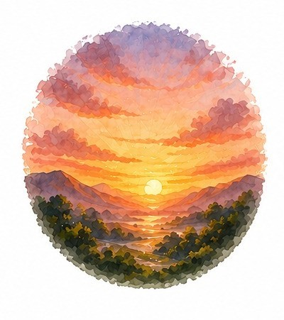
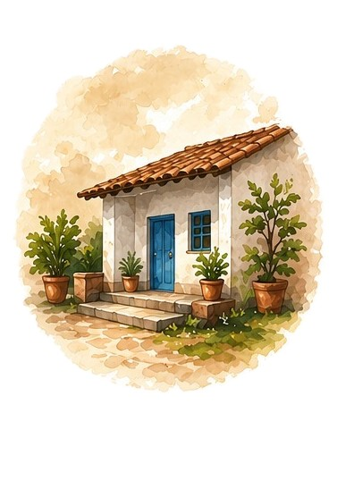
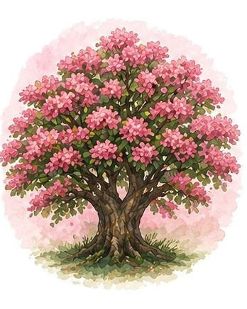

Blue
It symbolizes the sky and the ocean that surround us, unity, and the flag of our country.
Discover interesting facts about El Salvador and its culture.

Learn about the symbols that represent El Salvador.

The flag of El Salvador was officially adopted on May 17, 1912. The cobalt blue represents the Pacific Ocean.

The Torogoz became El Salvador's national bird in 1999. It symbolizes freedom and family.

The Izote flower symbolizes Salvadoran identity, resilience and hospitality.
Want to explore more?
Click here to discover extra content!Our color palette was carefully selected to represent the identity, culture and values of El Salvador.
It symbolizes the sky and the ocean that surround us, unity, and the flag of our country.

It represents rivers, lakes and beaches, tranquility and harmony with nature.

It represents the purity and peace of our people, and the warmth and hospitality that characterizes us.

It represents our mountains, life, lush nature, and hope for growth and renewal.

It represents the beauty of our sunrises, sunsets and fertile lands.

It symbolizes our history, traditions and cultural richness.

It symbolizes love, solidarity and commitment of our people.
